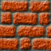

"Fessie Reborn" ist ein Spiel ganz in der Tradition der Spielhallen-Art. Der Spieler schlüpft in die Rolle des Drachen Fessie. Seine Aufgabe ist es, in vielen labyrinthartigen Levels diversen Müll aufzusammeln. Um durch die Level zu kommen, muss Fessie so manchen Gegner austricksen und verzwickte Hindernisse überwinden. Dabei stehen ihm Bomben und die Fähigkeit Feuer zu speien zur Verfügung. Wenn alle vorgefertigten Level durchgespielt wurden, bietet der Level Editor eine einfache Möglichkeit neue Level zu erstellen, zu testen und mit seinen Freunden zu teilen.
Laufen: Pfeiltasten bzw. WDSA
Feuerspeien: [Umschalttaste] + Pfeil links/rechts
Feld neben dem Spieler berühren, ohne es zu betreten: [Strg] + Pfeil links/rechts
Bombe legen: [Leertaste]
Aktuelles Level neustarten: [R]
Das Spielfeld besteht aus Blöcken mit verschiedenen Eigenschaften: